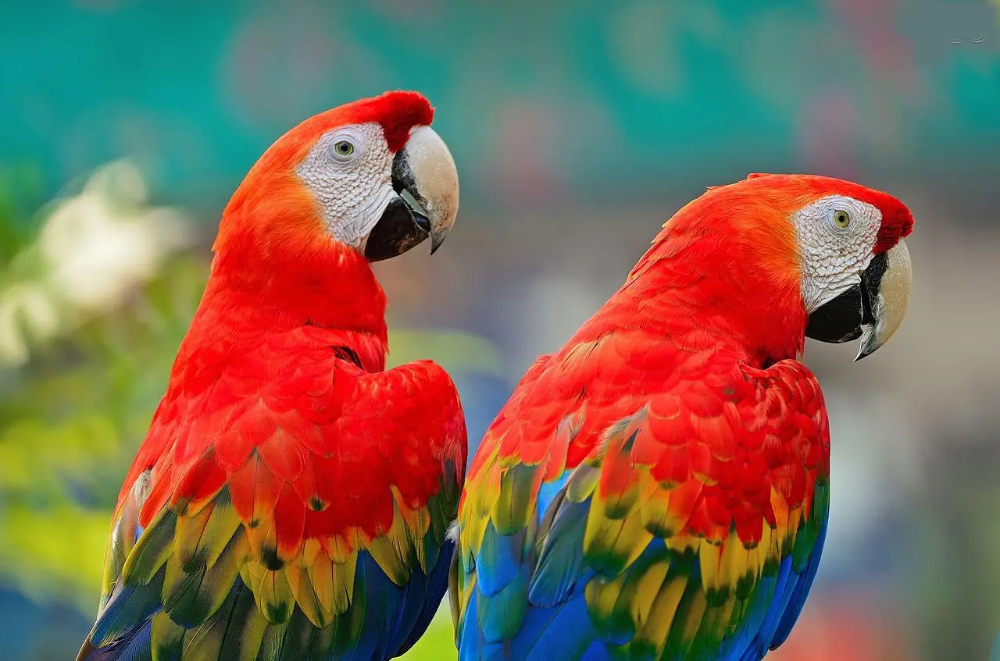
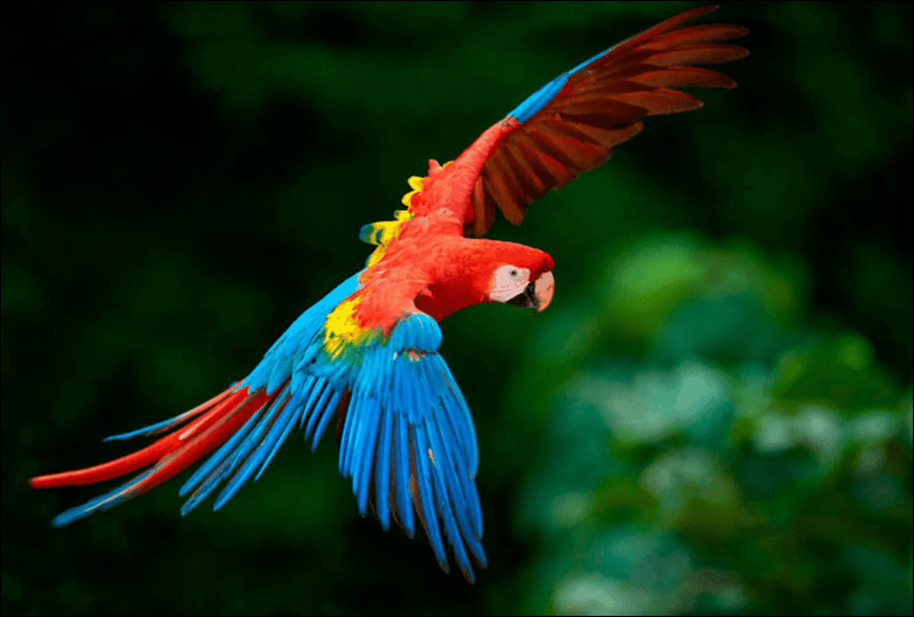

Las Guacamayas
Los guacamayos son loros grandes que miden de 46 a 51 cm de largo y pesan de 285 a 287 en el maracaná grande y de 90 a 95 cm y 1.708 g en el guacamayo aliverde. Las alas de estos guacamayos son largas y estrechas, lo cual es típico de las especies de loros que viajan largas distancias para buscar alimento. Tienen una mandíbula superior masiva curvada hacia abajo y un parche de piel pálida alrededor del ojo que se extiende hasta la base del pico. El parche de piel tiene plumas diminutas dispuestas en líneas que forman un patrón sobre la piel desnuda en todas las especies del género excepto en el guacamayo rojo, en la que la piel está desnuda. En la mayoría de las especies, el pico es negro, pero el guacamayo rojo y el guacamayo aliverde tienen una mandíbula superior predominantemente de color cuerno y una inferior negra. Los colores en el plumaje de los guacamayos son espectaculares. Cuatro especies son predominantemente verdes, dos especies son en su mayoría azules y amarillas, y tres especies (incluido el extinto guacamayo cubano) son en su mayoría rojas. No hay dimorfismo sexual en el plumaje, y el plumaje de los juveniles es similar al de los adultos, aunque un poco más opaco en algunas especies.
 Distribución y hábitat
Los guacamayos tienen una distribución neotropical desde México hasta Argentina. El centro de distribución de estas aves es la cuenca del Amazonas y la región fronteriza de Panamá y Colombia; cada uno con hasta cuatro especies encontradas juntas (marginalmente cinco donde el guacamayo verde se acerca al río Amazonas occidental). En Bolivia se encuentran siete especies, pero ninguna localidad en ese (ni en ningún otro) país supera las cuatro especies. La especie más extendida, el guacamayo rojo, está (o estuvo) distribuida por gran parte de América Central y la Amazonia. Por otro lado, el guacamayo de barba azul y el guacamayo de frente roja tienen pequeñas distribuciones únicamente en Bolivia. El rango general de muchas especies y el género en su conjunto ha disminuido en tiempos históricos debido a las actividades humanas. El guacamayo verde se distribuye desde el norte de México hasta el norte de Argentina, pero la distribución es discontinua, con poblaciones en México, una gran brecha, luego una población en la Cordillera de la Costa de Venezuela y una población a lo largo de los Andes desde el oeste de Venezuela hasta el norte de Argentina. El guacamayo azul y amarillo fue extirpado de Trinidad en la década de 1960 (pero luego fue reintroducido), y varias especies hipotéticas aparentemente se extinguieron en las islas del Caribe. Los guacamayos son generalmente bastante adaptables en sus requisitos de hábitat; esto llega a su extremo en el guacamayo rojo, que, como sugiere su amplia distribución, utiliza la mayoría de los tipos de hábitat, desde la selva tropical húmeda hasta los bosques abiertos y la sabana. El único requisito es suficientes árboles grandes, que es donde obtienen su alimento y lugares de reproducción. Las otras especies son un poco más limitadas en sus opciones de hábitat, pero la necesidad de árboles grandes es universal. El guacamayo de barba azul generalmente habita en "islas" de bosque en la sabana, y el guacamayo de frente roja prefiere matorrales áridos y bosques de cactus. Dentro de su rango, las aves pueden viajar amplia y estacionalmente en busca de alimento. No realizan migraciones a gran escala, sino movimientos más locales entre una variedad de hábitats diferentes.
Alimentación
Como la mayoría de los loros, las semillas y las frutas son la parte principal de la dieta del género Ara. La especie particular y el rango de dieta varía de una especie a otra. A diferencia de muchas aves, los guacamayos son depredadores de semillas, no dispersores de semillas, y usan sus picos inmensamente fuertes para abrir incluso las conchas más duras. Su dieta se superpone con la de algunas especies de monos; en un estudio de guacamayos aliverdes en Venezuela, compartían muchos de los mismos árboles que los sakis barbudos, aunque en algunos casos comían las semillas en una etapa más temprana de madurez que los sakis, cuando contenían más veneno. Los guacamayos, al igual que otros loros, pueden consumir arcilla para absorber compuestos tóxicos producidos por algunos venenos. Además, los compuestos tóxicos de algunos alimentos pueden ser neutralizados por compuestos, como los taninos, que se encuentran en otros alimentos consumidos al mismo tiempo.
VER MAS DE LA GUACAMAYA
Elavorado por:
Angel Hernandez

Josue Chirivi